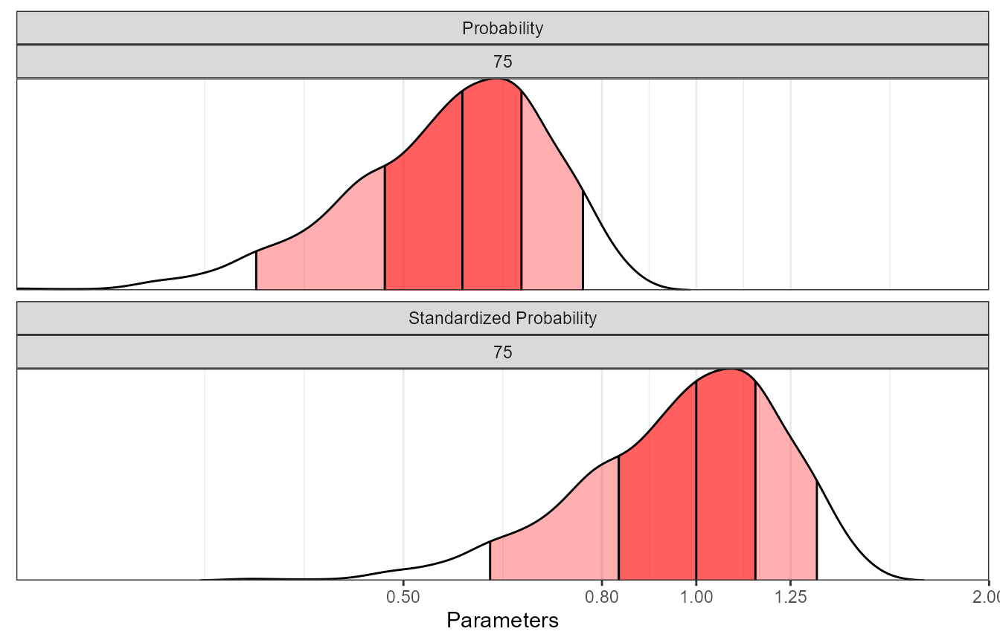
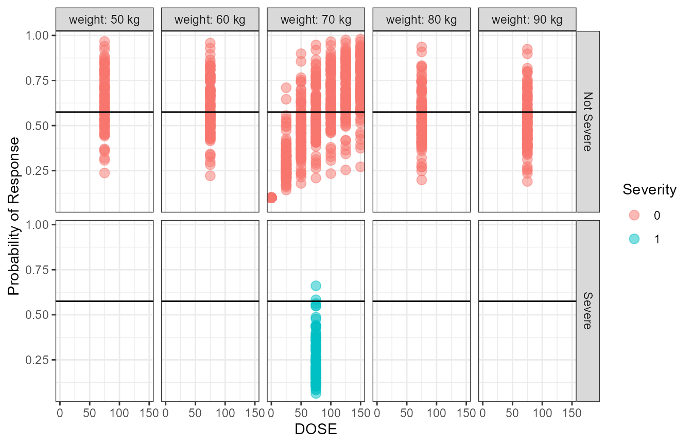
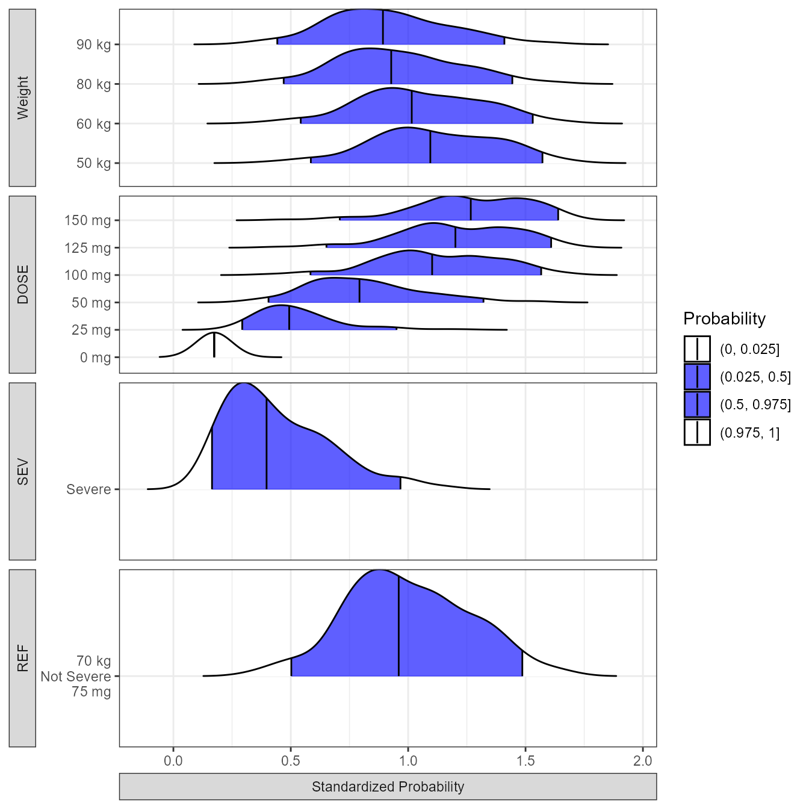
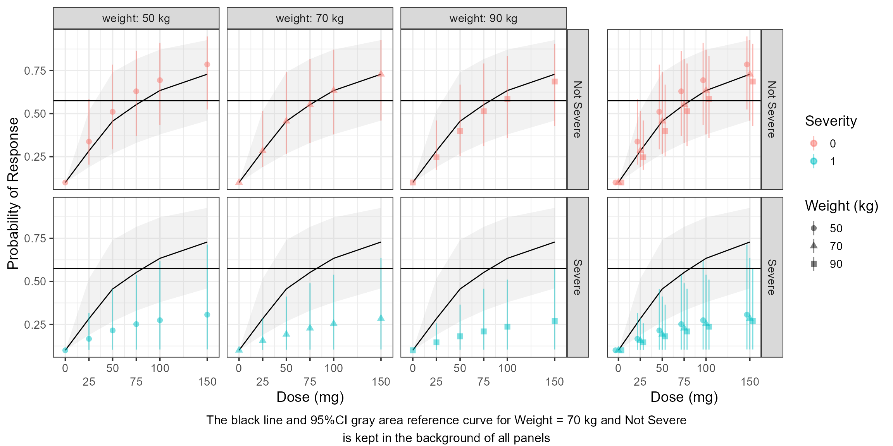
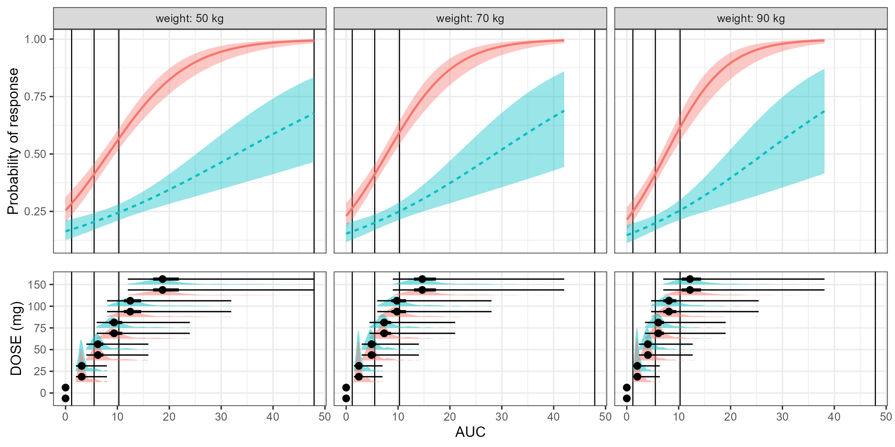
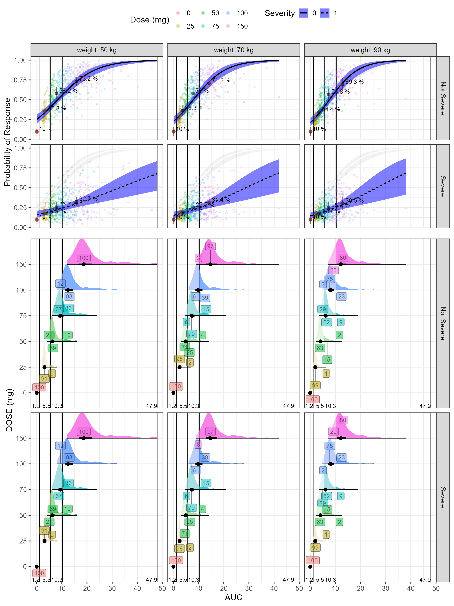

vignettes/Exposure_Response_Example.Rmd
Exposure_Response_Example.Rmdmrgsolve
Here we illustrate the communication of covariate effects of a Binary response endpoint (0/1) model. The response is linked to PK exposures represented by the area under the curve of PK concentrations (AUC). The AUCs act by a saturating Emax function on the logit scale while body weight has an effect on PK clearance (CL). Finally, the disease severity is an important covariate on Emax where patients with severe disease have a 50% lower Emax.
Key model equations are presented below:
The AUC equals Dose/Individual Pharmacokinetic Clearance (CLi) of the Drug. CLi is a function of the population Clearance (CL), the patient’s specific Weight and a random between patients variability term. $$\color{blue}{AUC} = \left(\frac { \color{green}{Dose}} {\color{red}{CLi} }\right)= \left(\frac { \color{green}{Dose}} {\color{red}{CL} \times \left( \frac { \color{green}{Weight}} {70}\right)^{WTCL} \times exp(\eta{CL}) }\right)$$ The Emax is reduced when the disease is severe:
$$E_{max}= \color{red}{E_{max} \left(intercept \right)} + \color{red}{SevE_{max}}\times\left(\color{green}{Severity} = 1\right) $$ The equation of the log(odds) becomes: $$log(odds) = \color{red}{intercept} + \left( \frac {E_{max} \times \color{blue}{AUC}} {\color{red}{AUC_{50}} +\color{blue}{AUC} }\right)$$
# the typical probability from the model parameters will be :
TypicalProb<- 1/(1+exp(-(log(0.1/(1-0.1)) + (5*75/10/(7.5+75/10)))))
MaxProb<- 1/(1+exp(-(log(0.1/(1-0.1)) + (5*750/10/(7.5+750/10)))))
MinProb<- 1/(1+exp(-(log(0.1/(1-0.1)) + (5*0/10/(7.5+0/10)))))
#$PLUGIN Rcpp
# R::runif(0,1)< P1 ? 1 : 0
exprespmodel <- '
$PARAM @annotated
TVCL : 10 : Clearance CL (L/h)
WTCL : 0.75: Weight on CL (ref. 70 kg)
TVEMAX : 5 : Maximum Drug Effect
SEVEMAX : 2.5 : Severity Reduction of Drug Effect
AUC50 : 7.5 : Area Under the Curve providing half maximal response
TVBASEP : 0.1 : Baseline Probability of Response
$PARAM @annotated // reference values for covariate
WT : 70 : Weight (kg)
SEV : 0 : Sex (0=Female, 1=Male)
DOSE : 75 : Dose (mg)
$OMEGA @annotated @block
nCL : 0.16 : ETA on CL
$OMEGA @annotated @block
nInt : 0.05 : ETA on CL
$PRED
double CL = TVCL *
pow((WT/70.0), WTCL)*exp(ETA(1));
double EMAX = TVEMAX - SEVEMAX*(SEV == 1) ;
double BASEP = TVBASEP *exp(ETA(2));
double Intercept = log(BASEP/(1-BASEP));
capture CLi = CL;
capture AUC = DOSE/CL;
capture LGST = Intercept + (EMAX*AUC/(AUC50+AUC));
capture P1 = 1/(1+exp(-LGST));
capture DV = P1;
'
modexprespsim <- mcode("exprespmodel", exprespmodel)
simdata <- expand.idata(SEV=c(0),
DOSE = c(0,75),
ID = 1:1000) %>%
dplyr::mutate(WT = 70) #exp(rnorm(n(),log(70),0.3)
set.seed(466548)
simout <- modexprespsim %>%
data_set(simdata) %>%
carry.out(WT, DOSE, SEV) %>%
mrgsim()%>%
as.data.frame
simout$DV = ifelse(runif(n=nrow(simout),min=0,max=1)< simout$P1,1 , 0)From the simulation of N=1000 patients we plot the probability of disease Cure versus PK exposures (AUC) for a reference subject with Weight of 70 kg and disease severity of “Not Severe”.
WT_names <- c(
'70'="Weight: 70 kg"
)
SEV_names <- c(
'0'="Severity: Not Severe"
)
simout$SEV_cat <- "Not Severe"
vlines <- quantile(simout$AUC[simout$AUC>0],probs = c(0,1/4,0.5,3/4,1),na.rm = TRUE)
simoutdataprobsdose <- simout %>%
group_by(DOSE) %>%
summarise(probs = mean(DV),
n = n(),
lower = probs - qnorm(1-0.05/2)*sqrt((1/n)*probs*(1-probs)),
upper = probs + qnorm(1-0.05/2)*sqrt((1/n)*probs*(1-probs)),
n0 = length(DV[DV==0]),
n1= length(DV[DV==1]),
medAUC= median(AUC))
simoutdataprobs <- simout %>%
mutate(AUC_bins=table1::eqcut(AUC,4,withhold = list(PLACEBO=AUC==0))) %>%
group_by(AUC_bins) %>%
summarise(probs = mean(DV),
n = n(),
lower = probs - qnorm(1-0.05/2)*sqrt((1/n)*probs*(1-probs)),
upper = probs + qnorm(1-0.05/2)*sqrt((1/n)*probs*(1-probs)),
n0 = length(DV[DV==0]),
n1= length(DV[DV==1]),
medAUC= median(AUC))
percentineachbreakcategory <- simout %>%
mutate(AUC_bins=table1::eqcut(AUC,4,withhold = list(PLACEBO=AUC==0))) %>%
group_by(DOSE) %>%
mutate(Ntot= n())%>%
group_by(DOSE,AUC_bins,WT,SEV) %>%
mutate(Ncat=n(),xmed=median(AUC))%>%
mutate(percentage=Ncat/Ntot)%>%
distinct(DOSE,xmed,AUC_bins,percentage,WT,SEV)
probplot <- ggplot(simout, aes(AUC,DV,linetype=factor(SEV_cat))) +
facet_grid( WT~SEV,labeller=labeller(WT=WT_names,SEV=SEV_names))+
geom_vline(xintercept = vlines)+
geom_point(position=position_jitter(height=0.02,width=0.1),
aes(color=factor(DOSE)),size=1,alpha=0.2)+
geom_smooth(method = "glm",
method.args = list(family = "binomial"),
se = TRUE) +
geom_pointrange(data=simoutdataprobs,aes(medAUC,probs,ymin=lower,ymax=upper),
inherit.aes = FALSE,alpha=0.2)+
geom_text(data=simoutdataprobs, aes(x=medAUC,y=probs,
label=paste(round(100*probs,1),"%")),
inherit.aes = FALSE,hjust=-0.15,vjust=-0.15,size=4)+
geom_point(data=simoutdataprobsdose %>% filter(DOSE!=0),
aes(x=medAUC,y=probs,color=factor(DOSE)),
inherit.aes = FALSE,size=4, shape="diamond")+
geom_text_repel(data=simoutdataprobs, aes(x=medAUC,y=Inf,
label=paste(n1,n,sep = "/")),
inherit.aes = FALSE,direction="y")+
labs(color="Dose (mg)",y="Probability of Response",
linetype="Severity")+
theme_bw(base_size = 16) +
theme(legend.position = "top")
exposureplot <- ggplot(simout,
aes(y = as.factor(DOSE),x = AUC,
fill = as.factor(DOSE))) +
facet_grid( WT~SEV,labeller=labeller(WT=WT_names,SEV=SEV_names))+
geom_vline(xintercept = vlines)+
geom_text(data=data.frame(vlines), aes(x=vlines,y=-Inf,
label=paste(round(vlines,1))),
inherit.aes = FALSE,vjust=-0.1,hjust=1)+
stat_slab(scale = 1, alpha= 0.9,
aes(fill_ramp = after_stat(
ifelse(x<= vlines[2],"",
ifelse(x>vlines[2] & x <=vlines[3],"50%",
ifelse(x>vlines[3] & x<=vlines[4],"50%","")))
)
)
)+
stat_pointinterval(.width = c(.5,1))+
geom_label(data=percentineachbreakcategory,
aes(x=xmed, label=round(100*percentage,0) ),alpha=0.5)+
theme_bw(base_size = 16)+
theme(legend.position="none",
strip.background.x = element_blank(),
strip.text.x = element_blank(),
plot.background = element_blank())+
labs(x = "AUC", y = "DOSE (mg)")+
scale_y_discrete(breaks= c(0,75),labels=c("PLB"," 75"))
egg::ggarrange(
(probplot+
theme(axis.title.x.bottom = element_blank(),
axis.text.x.bottom = element_blank(),
axis.ticks.x = element_blank(),
plot.margin = unit(c(0,0,0,0), "cm"))) ,
(exposureplot +
theme(plot.margin = unit(c(0,0,0,0), "cm") )) ,heights = c(1,0.5))This figure presents the relationship between the AUC and probability of Cure. The AUCs has been binned into placebo and quartiles. For the placebo and exposure bins, the probability of response was computed and communicated using text of the percentage and a pointinterval showing the 95% CI. The probability by dose level is also shown as diamonds. A fitted logistic regression line is superimposed. In a real data fitting situation, this can constitute a diagnostic plot on how well the proposed logistic fit is adequate to describe the data. The lower part of the figure shows the distributions of AUCs split by Dose level. The numbers constitutes the percent of patients falling into a bin (25% by definition in this plot). This information can become more useful when trying to compare multiple dose levels as illustrated later in this vignette. The number of responders over the total number of patients is shown for each bin using n/N notation. On the bottom axis we communicate the computed bin limits.
simout <- modexprespsim %>%
data_set(simdata) %>%
carry.out(WT, DOSE, SEV) %>%
mrgsim()%>%
as.data.frame
simoutbsvref <- simout %>%
gather(paramname, paramvalue,P1)%>%
group_by(paramname,DOSE)%>%
dplyr::summarize(Pstdref = quantile(paramvalue, 0.5,na.rm =TRUE)) %>%
ungroup() %>%
select(DOSE, Pstdref)
simout <- left_join(simout,simoutbsvref)
simoutbsvlong <- simout %>%
group_by(DOSE)%>%
mutate(P1std=P1/Pstdref) %>%
gather(paramname, paramvalue,P1std,P1)
yvar_names <- c(
'P1std'="Standardized Probability",
'P1'="Probability"
)
pbsvranges<- ggplot(simoutbsvlong %>%
filter(DOSE!=0), aes(
x = paramvalue,
y = paramname,
fill = factor(..quantile..),
height = ..ndensity..)) +
facet_wrap(paramname~DOSE , scales="free_y", ncol=1,
labeller=labeller(paramname=yvar_names) ) +
stat_density_ridges(
geom="density_ridges_gradient", calc_ecdf=TRUE,
quantile_lines=TRUE, rel_min_height=0.001, scale=0.9,
quantiles=c(0.05, 0.25, 0.5, 0.75, 0.95)) +
scale_fill_manual(
name="Probability",
values=c("white", "#FF000050", "#FF0000A0", "#FF0000A0", "#FF000050", "white"),
labels = c("(0, 0.05]", "(0.05, 0.25]",
"(0.25, 0.5]", "(0.5, 0.75]",
"(0.75, 0.95]", "(0.95, 1]")) +
theme_bw() +
theme(
legend.position = "none",
axis.text.y = element_blank(),
axis.ticks.y = element_blank(),
axis.title.y = element_blank()) +
labs(x="Parameters", y="") +
scale_x_log10(breaks=c(0.5,0.8,1,1.25,2)) +
coord_cartesian(expand=FALSE,xlim=c(0.2,2))
simoutbsvranges <- simoutbsvlong %>%
group_by(paramname)%>%
dplyr::summarize(
P05 = quantile(paramvalue, 0.05),
P25 = quantile(paramvalue, 0.25),
P50 = quantile(paramvalue, 0.5),
P75 = quantile(paramvalue, 0.75),
P95 = quantile(paramvalue, 0.95))
simoutbsvranges
#> # A tibble: 2 × 6
#> paramname P05 P25 P50 P75 P95
#> <chr> <dbl> <dbl> <dbl> <dbl> <dbl>
#> 1 P1 0.0754 0.101 0.187 0.575 0.733
#> 2 P1std 0.658 0.849 1 1.15 1.38
pbsvranges The table and associated plot illustrated the impact of between subject variability on the probability of response on regular and standardized scales.
Next, we show how the odds and probabilities can be computed while varying the covariate values. We already know that the distribution of AUC depends on the Dose and on the clearance distributions. The model had five parameters shown in red, the dose, disease severity and weight were covariates and are shown in green. A Change in body weight will trigger a change in Clearance which in turn will change the AUC. First, we define a reference odds with reference covariate values Severity = 0, Weight = 70 and DOSE = 75. We then vary each covariate keep all the other covariate at reference. For nonlinear relationships (emax), in addition to the covariate unit change e.g. 25 mg change of dose it is important to define what reference value we are using e.g. A change from Placebo = 0 mg to 25 mg is not the same as a change from the typical dose of 75 mg increasing it to 100 mg.
set.seed(678549)
thmeans <- c(10,0.75, #TVCL WTCL
5,3, # TVEMAX SEVEMAX
7.5, # AUC50
0.1) #BASEP
thvariances<- (thmeans*0.25)^2
thecorrelations <- matrix(ncol=length(thmeans),nrow=length(thmeans))
diag(thecorrelations)<- 1
thecorrelations[lower.tri(thecorrelations, diag = FALSE)]<- 0.2
thecorrelations[upper.tri(thecorrelations, diag = FALSE)]<- 0.2
thevarcovmatrix<- diag(sqrt(thvariances))%*%thecorrelations%*%diag(sqrt(thvariances))
sim_parameters <- MASS::mvrnorm(n = nsim, mu=as.numeric(thmeans),
Sigma=thevarcovmatrix, empirical = TRUE)
colnames(sim_parameters) <- colnames(thevarcovmatrix) <- c("TVCL","WTCL",
"TVEMAX","SEVEMAX","AUC50",
"BASEP")
sim_parameters<- as.data.frame(sim_parameters)
reference.values <- data.frame(WT = 70, DOSE = 75, SEV = 0 )
covcomb <- expand.modelframe(
WT = c(50,60,70,80,90),
DOSE = c(0,25,50,75,100,125,150),
SEV = c(0,1),
rv = reference.values)
covcomb <- covcomb[!duplicated(
paste(covcomb$WT,covcomb$WT,covcomb$DOSE,covcomb$SEV)),]
covcomb$ID <- 1:nrow(covcomb)
iter_sims <- NULL
for(i in 1:nsim) {
idata <- as.data.frame(covcomb)
idata$covname<- NULL
data.all <- idata
data.all$TVCL <- as.numeric(sim_parameters[i,1])
data.all$WTCL <- as.numeric(sim_parameters[i,2])
data.all$TVEMAX <- as.numeric(sim_parameters[i,3])
data.all$SEVEMAX <- as.numeric(sim_parameters[i,4])
data.all$AUC50 <- as.numeric(sim_parameters[i,5])
data.all$BASEP <- as.numeric(sim_parameters[i,6])
out <- modexprespsim %>%
data_set(data.all) %>%
carry.out(CL,WT, DOSE, SEV, AUC) %>%
zero_re() %>%
mrgsim()
dfsimunc <- as.data.frame(out%>% mutate(rep = i) )
iter_sims <- rbind(iter_sims,dfsimunc)
}
wt.labs <- c("weight: 50 kg","weight: 60 kg","weight: 70 kg","weight: 80 kg","weight: 90 kg","(all)")
names(wt.labs) <- c("50","60","70","80","90","(all)")
SEV_names <- c(
'0'="Not Severe",
'1'="Severe"
)
stdprobplot<- ggplot(iter_sims, aes(DOSE,P1,col=factor(SEV) ) )+
geom_point(aes(group=interaction(ID,rep)),alpha=0.5,size=3)+
geom_hline(yintercept=TypicalProb)+
facet_grid(SEV~ WT,labeller = labeller(WT=wt.labs, SEV = SEV_names))+
labs(y="Probability of Response", colour="Severity")
stdprobplot The above figure show the raw simulated probabilities split by covariate values. In the next section we show how we can standardize and summarize the probabilities.
iter_sims <- iter_sims %>%
mutate(P1std=P1/TypicalProb)%>%
gather(paramname,paramvalue,P1std)%>%
ungroup() %>%
dplyr::mutate( covname = case_when(
ID== 1 ~ "Weight",
ID== 2 ~ "Weight",
ID== 3 ~ "REF",
ID== 4 ~ "Weight",
ID== 5 ~ "Weight",
ID== 6 ~ "DOSE",
ID== 7 ~ "DOSE",
ID== 8 ~ "DOSE",
ID== 9 ~ "DOSE",
ID== 10 ~ "DOSE",
ID== 11 ~ "DOSE",
ID== 12 ~ "SEV"
),
covvalue =case_when(
ID== 1 ~ paste(WT,"kg"),
ID== 2 ~ paste(WT,"kg"),
ID== 3 ~ "70 kg\nNot Severe\n75 mg",
ID== 4 ~ paste(WT,"kg"),
ID== 5 ~ paste(WT,"kg"),
ID== 6 ~ paste(DOSE,"mg"),
ID== 7 ~ paste(DOSE,"mg"),
ID== 8 ~ paste(DOSE,"mg"),
ID== 9 ~ paste(DOSE,"mg"),
ID== 10 ~ paste(DOSE,"mg"),
ID== 11 ~ paste(DOSE,"mg"),
ID== 12 ~ "Severe"
) )
iter_sims$covname <-factor(as.factor(iter_sims$covname ),
levels = c("Weight","DOSE","SEV","REF"))
iter_sims$covvalue <- factor(as.factor(iter_sims$covvalue),
levels = c("0 mg","25 mg","50 mg",
"100 mg","125 mg","150 mg",
"50 kg","60 kg","80 kg", "90 kg",
"70 kg\nNot Severe\n75 mg", "Severe"))
ggplot(iter_sims,aes(x=paramvalue,y=covvalue))+
stat_density_ridges(aes(fill=factor(..quantile..),height=..ndensity..),
geom = "density_ridges_gradient", calc_ecdf = TRUE,
quantile_lines = TRUE, rel_min_height = 0.001,scale=0.9,
quantiles = c(0.025,0.5, 0.975))+
facet_grid(covname~paramname,scales="free",switch="both",
labeller = labeller(paramname=yvar_names))+
scale_fill_manual(
name = "Probability", values = c("white","#0000FFA0", "#0000FFA0","white"),
labels = c("(0, 0.025]","(0.025, 0.5]","(0.5, 0.975]","(0.975, 1]")
)+
theme_bw()+
theme(axis.title = element_blank(),strip.placement = "outside") From the distributions plot we can appreciate that severity has the biggest impact on the probability of response followed by Dose which an effect that is saturating above 125 mg. Next, we prepare the data and present it using a forest plot.
coveffectsdatacovrep <- iter_sims %>%
dplyr::group_by(paramname,ID,WT,DOSE,SEV,covname,covvalue) %>%
dplyr::summarize(
mid= median(paramvalue),
lower= quantile(paramvalue,0.025),
upper = quantile(paramvalue,0.975))%>%
dplyr::filter(!is.na(mid))
simoutbsvranges<-simoutbsvranges[simoutbsvranges$paramname=="P1std",]
coveffectsdatacovrepbsv <- coveffectsdatacovrep[coveffectsdatacovrep$covname=="REF",]
coveffectsdatacovrepbsv$covname <- "BSV"
coveffectsdatacovrepbsv$covvalue <- "90% of patients"
coveffectsdatacovrepbsv$label <- "90% of patients"
coveffectsdatacovrepbsv$lower <- simoutbsvranges$P05
coveffectsdatacovrepbsv$upper <- simoutbsvranges$P95
coveffectsdatacovrepbsv2 <- coveffectsdatacovrep[coveffectsdatacovrep$covname=="REF",]
coveffectsdatacovrepbsv2$covname <- "BSV"
coveffectsdatacovrepbsv2$covvalue <- "50% of patients"
coveffectsdatacovrepbsv2$label <- "50% of patients"
coveffectsdatacovrepbsv2$lower <- simoutbsvranges$P25
coveffectsdatacovrepbsv2$upper <- simoutbsvranges$P75
coveffectsdatacovrepbsv<- rbind(coveffectsdatacovrep,coveffectsdatacovrepbsv2,
coveffectsdatacovrepbsv)
coveffectsdatacovrepbsv <- coveffectsdatacovrepbsv %>%
mutate(
label= covvalue,
LABEL = paste0(format(round(mid,2), nsmall = 2),
" [", format(round(lower,2), nsmall = 2), "-",
format(round(upper,2), nsmall = 2), "]"))
coveffectsdatacovrepbsv<- as.data.frame(coveffectsdatacovrepbsv)
coveffectsdatacovrepbsv$label <-factor(as.factor(coveffectsdatacovrepbsv$label ),
levels = c("All Subjects","90% of patients","50% of patients",
"50 kg","60 kg","80 kg","90 kg",
"0 mg","25 mg","50 mg","100 mg","125 mg","150 mg",
"Severe","70 kg\nNot Severe\n75 mg"
))
coveffectsdatacovrepbsv$covname <-factor(as.factor(coveffectsdatacovrepbsv$covname ),
levels = c("Weight","DOSE","SEV","REF","BSV"))
ref_legend_text <- "Reference (vertical line)"
png("./Figure_8_4.png",width =9 ,height = 7,units = "in",res=72)
forest_plot(coveffectsdatacovrepbsv,
strip_placement = "outside",
show_ref_area = FALSE,
show_ref_value=TRUE,
ref_legend_text = ref_legend_text,
plot_table_ratio = 2,
interval_shape = "circle small",
bsv_shape = "triangle",
legend_order = c("pointinterval","shape","area","ref"),
combine_interval_shape_legend = TRUE,
base_size = 12,
table_text_size = 4,
y_label_text_size = 12,
xlabel= " ",
facet_formula = "covname~paramname",
facet_labeller = labeller(paramname=yvar_names),
facet_scales = "free",
facet_space ="free",
logxscale = TRUE,
major_x_ticks = c(0.1,0.25, 0.5,1,1.5),
x_range = c(0.1, 1.5))
dev.off()
#> agg_png
#> 2It is more common to construct a full range (every possible combination of dose levels and covariate values) simulations when visualizing dose/exposure/response curves. In this section we show how to construct such a curve:
covcombdr <- expand.grid(
WT = c(50,70,90),
DOSE = c(0,25,50,75,100,150),
SEV = c(0,1)
)
covcombdr <- covcombdr[!duplicated(
paste(covcombdr$WT,covcombdr$WT,covcombdr$DOSE,covcombdr$SEV)),]
covcombdr$ID <- 1:nrow(covcombdr)
iter_sims <- NULL
for(i in 1:nsim) {
idata <- as.data.frame(covcombdr)
idata$covname<- NULL
data.all <- idata
data.all$TVCL <- as.numeric(sim_parameters[i,1])
data.all$WTCL <- as.numeric(sim_parameters[i,2])
data.all$TVEMAX <- as.numeric(sim_parameters[i,3])
data.all$SEVEMAX <- as.numeric(sim_parameters[i,4])
data.all$AUC50 <- as.numeric(sim_parameters[i,5])
data.all$BASEP <- as.numeric(sim_parameters[i,6])
out <- modexprespsim %>%
data_set(data.all) %>%
carry.out(CL,WT, DOSE, SEV, AUC) %>%
zero_re() %>%
mrgsim()
dfsimunc <- as.data.frame(out%>% mutate(rep = i) )
iter_sims <- rbind(iter_sims,dfsimunc)
}
iter_sims <- data.table(iter_sims)
summary_P1 <- function(P1) {
x <- c(
P1med = median(P1),
P1low = quantile(P1, probs = 0.05),
P1up = quantile(P1, probs = 0.95)
)
data.table(paramname=names(x), paramvalue=x)
}
iter_sims_sum <- iter_sims[, summary_P1(P1), by=.( DOSE, WT, SEV)]
iter_sims_sum <- spread(iter_sims_sum,paramname,paramvalue)
iter_sims_sum <- as.data.frame(iter_sims_sum)
wt.labs <- c("weight: 50 kg","weight: 60 kg","weight: 70 kg","weight: 80 kg","weight: 90 kg","(all)")
names(wt.labs) <- c("50","60","70","80","90","(all)")
SEV_names <- c(
'0'="Not Severe",
'1'="Severe"
)
iter_sims_sum_ref <- iter_sims_sum %>%
filter(WT==70,SEV==0)
iter_sims_sum_ref$WT <- NULL
iter_sims_sum_ref$SEV <- NULL
plot1 <- ggplot(iter_sims_sum, aes(DOSE,P1med,col=factor(SEV) ) )+
geom_ribbon(data=iter_sims_sum_ref,aes(x=DOSE,
ymin =`P1low.5%`,
ymax =`P1up.95%`),inherit.aes = FALSE,
fill = "gray", alpha=0.2, color="transparent")+
geom_line(data=iter_sims_sum_ref,aes(x=DOSE,
y =P1med),inherit.aes = FALSE,
color = "black", alpha=1)+
geom_pointrange(aes(group=interaction(WT,SEV,DOSE),
ymin =`P1low.5%`,
ymax =`P1up.95%`,
shape = as.factor(WT)),alpha=0.5,
position = position_dodge(width=10))+
geom_hline(yintercept=TypicalProb)+
facet_grid(SEV~ WT,labeller = labeller(WT=wt.labs, SEV = SEV_names))+
theme_bw(base_size = 14)+
labs(color="Severity",y = "Probability of Response", x = "Dose (mg)",
shape = "Weight (kg)")+
scale_x_continuous(breaks=unique(iter_sims_sum$DOSE),guide = guide_axis(n.dodge = 2))+
theme(legend.position = "none")
plot2 <- plot1 +
facet_grid(SEV~ .,labeller = labeller(WT=wt.labs, SEV = SEV_names))+
theme(axis.title.y.left = element_blank(),
axis.ticks.y.left = element_blank(),
axis.text.y.left = element_blank(),legend.position = "right")
egg::ggarrange( plot1 ,plot2 ,widths = c(1,0.3),
bottom = "The black line and 95%CI gray area reference curve for Weight = 70 kg and Not Severe\nis kept in the background of all panels" )
We take the plot a step further by showing the distributions of AUcs by Dose level and severity.
vlines <- quantile(iter_sims$AUC[iter_sims$AUC>0],probs = c(0,1/3,2/3,1),na.rm = TRUE)
iter_sims$PLACEBO <- ifelse(iter_sims$DOSE>0,"Active","PLACEBO")
simoutdataprobs <- iter_sims %>%
mutate(AUC_bins=table1::eqcut(AUC,3,withhold = list(PLACEBO=AUC==0))) %>%
group_by(PLACEBO, WT,SEV,AUC_bins) %>%
summarise(probs = mean(DV),
n = n(),
lower = probs - qnorm(1-0.05/2)*sqrt((1/n)*probs*(1-probs)),
upper = probs + qnorm(1-0.05/2)*sqrt((1/n)*probs*(1-probs)),
n0 = length(DV[DV==0]),
n1= length(DV[DV==1]),
medAUC= median(AUC))
simoutdataprobsdose <- iter_sims %>%
group_by(PLACEBO, WT,SEV,DOSE) %>%
summarise(probs = mean(DV),
n = n(),
lower = probs - qnorm(1-0.05/2)*sqrt((1/n)*probs*(1-probs)),
upper = probs + qnorm(1-0.05/2)*sqrt((1/n)*probs*(1-probs)),
n0 = length(DV[DV==0]),
n1= length(DV[DV==1]),
medAUC= median(AUC))
SEV_names <- c(
'0'="Not Severe",
'1'="Severe"
)
wt.labs <- c("weight: 50 kg","weight: 70 kg","weight: 90 kg")
names(wt.labs) <- c("50","70","90")
a <- ggplot(data=data.frame(iter_sims),aes(AUC, P1,
linetype = as.factor(SEV),
color = as.factor(SEV),
fill = as.factor(SEV),
group=interaction(WT,SEV)))+
facet_grid(.~ WT,labeller = labeller(WT=wt.labs, SEV = SEV_names))+
geom_vline(xintercept = vlines)+
geom_smooth(method = "glm", method.args = list(family = "binomial")
) +
theme_bw(base_size = 14)+
theme(axis.title.x.bottom = element_blank(),
axis.text.x.bottom = element_blank(),
axis.ticks.x = element_blank(),
legend.position = "none")+
labs(y="Probability of response",linetype="Severity",
color = "Weight (kg)", fill = "Weight (kg)")
b <- ggplot(iter_sims,
aes(y = as.factor(DOSE),x = AUC,fill = as.factor(SEV))) +
facet_grid(.~ WT,labeller = labeller(WT=wt.labs, SEV = SEV_names))+
geom_vline(xintercept = vlines)+
stat_slab(scale = 4, alpha=0.5,position = "dodgejust")+
stat_pointinterval(.width = c(.5,1),position = "dodgejust")+
theme_bw(base_size = 14)+
theme(legend.position="none",
strip.background.x = element_blank(),
strip.text.x = element_blank())+
labs(x = "AUC", y = "DOSE (mg)")
egg::ggarrange(a,b,heights=c(1,0.6)) Finally, we color by dose level and compute percent of the AUC distribution by dose level that is within the overall AUC tertiles.
percentineachbreakcategory <- iter_sims %>%
mutate(AUC_bins=table1::eqcut(AUC,3,withhold = list(PLACEBO=AUC==0))) %>%
group_by(DOSE, WT,SEV) %>%
mutate(Ntot= n())%>%
group_by(DOSE,WT,SEV,AUC_bins) %>%
mutate(Ncat=n(),xmed=median(AUC))%>%
mutate(percentage=Ncat/Ntot)%>%
distinct(DOSE,xmed,AUC_bins,percentage,WT,SEV)
probplot<- ggplot(iter_sims , aes(AUC,DV)) +
facet_grid(SEV ~WT,labeller=labeller(WT=wt.labs,SEV=SEV_names))+
geom_smooth(data=iter_sims %>%
filter(WT==70,SEV ==0) %>%
mutate(SEV=NULL,WT=NULL),method = "glm",
method.args = list(family = "binomial"),
se = TRUE,color="white",fill="lightgray",alpha=0.3) +
geom_vline(xintercept = vlines)+
geom_point(position=position_jitter(height=0.02,width=0.1),size=1,alpha=0.2,
aes(colour=factor(DOSE)))+
geom_smooth(method = "glm",
method.args = list(family = "binomial"),
se = TRUE,color="black",fill="blue",alpha=0.5,
aes(linetype=as.factor(SEV))) +
geom_pointrange(data=simoutdataprobs,aes(medAUC,probs,ymin=lower,ymax=upper),
inherit.aes = TRUE,alpha=0.5)+
geom_text(data=simoutdataprobs, aes(x=medAUC,y=probs,
label=paste(paste(round(100*probs,1),"%")
#, paste(n1,n,sep = "/"),sep = "\n"
)),
inherit.aes = TRUE,hjust=-0.15,vjust=-0.15,size=4)+
geom_point(data=simoutdataprobsdose, aes(x=medAUC,y=probs,colour=factor(DOSE)),
inherit.aes = FALSE,shape="diamond",size=4,alpha=0.3)+
theme_bw(base_size = 16)+
theme(legend.position = "top")+
labs(color="Dose (mg)",y="Probability of Response",
linetype="Severity")
explot<- ggplot(iter_sims,aes(y = as.factor(DOSE),x = AUC,
fill = as.factor(DOSE))) +
facet_grid(SEV ~WT,labeller=labeller(WT=wt.labs,SEV=SEV_names))+
geom_vline(xintercept = vlines)+
geom_text(data=data.frame(vlines), aes(x=vlines,y=-Inf,
label=paste(round(vlines,1))),
inherit.aes = FALSE,vjust=-0.1,hjust=1)+
stat_slab( aes(fill_ramp = after_stat(
ifelse(x<= vlines[2],"lower",
ifelse(x>vlines[2] & x <=vlines[3],"middle",
ifelse(x>vlines[3],"upper","")))
)
),scale=1,alpha=0.8,normalize ="groups"
)+
stat_pointinterval(.width = c(.5,1))+
geom_label_repel(data=percentineachbreakcategory,
aes(x=xmed, label=round(100*percentage,0) ),alpha=0.5,direction = "y")+
theme_bw(base_size = 16)+
theme(legend.position="none",
strip.background.x = element_blank(),
strip.text.x = element_blank(),
plot.background = element_blank())+
labs(x = "AUC", y = "DOSE (mg)")
egg::ggarrange(probplot +
theme(axis.title.x.bottom = element_blank(),
axis.text.x.bottom = element_blank(),
axis.ticks.x = element_blank() ) , explot,
heights=c(1,2))